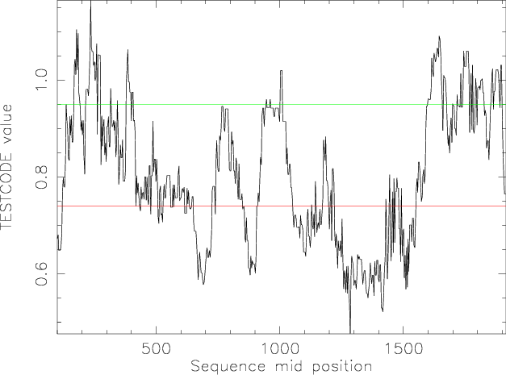

|
|
tcode |
Please help by correcting and extending the Wiki pages.
tcode identifies protein-coding regions in one or more DNA sequences using the fickett TESTCODE statistic. This is based on simple and universal differences between protein-coding and noncoding DNA. The TESTCODE statistic is calculated for windows of a specified size over each input sequence. The results can be output as a standard EMBOSS report file or displayed graphically.
The output reports each window as "Coding", "Noncoding" or "No opinion". Entries marked "No opinion" have a TESTCODE value that falls between the maximum and minimum values required to report a region as noncoding or coding. For the graphical plot, all points above a green horizontal line are determined to be coding regions. Those below a red line are determined to be noncoding. Points between the red and green lines are "no opinion" ones.
This application can assist in determining the probability of a region of nucleic sequence encoding a functional protein.
A window of at least 200 bases is moved over the sequence in steps of 3 bases
Let:
A1 = Number of A's in positions 1,4,7 ... A2 = Number of A's in positions 2,5,8 ... A3 = Number of A's in positions 3,6,9 ...
A position value is determined that reflects the degree to which each base is favoured in one codon position over another, i.e.
Apos = MAX(A1,A2,A3) / MIN(A1,A2,A3)+1
This is done for all 4 bases. The percentage composition of each base is also determined. Eight values are therefore determined, four position values and four composition values. These are then converted to probabilities (p) of coding using a look-up table provided as the data file for the program. The values in this look-up table have been determined experimentally using known coding and noncoding sequences.
Each of the probabilities is multiplied by a weight (w) value (again from the look-up table) for the respective base. The weight value reflects the percentage of the time that each parameter alone successfully predicted coding or noncoding function for the sequences of known function.
The TESTCODE statistic is then:
p1w1 + p2w2 + p3w3 + p4w4 + p5w5 + p6w6 + p7w7 + p8w8
A result of less than 0.74 is probably a non-coding region.
A result equal or greater than 0.95 is probably a coding region.
Anything in between these two values is uncertain.
% tcode Identify protein-coding regions using Fickett TESTCODE statistic Input nucleotide sequence(s): tembl:x65921 Length of sliding window [200]: Output report [x65921.tcode]: |
Go to the input files for this example
Go to the output files for this example
Example 2
Produce a graphical plot
% tcode -plot -graph cps Identify protein-coding regions using Fickett TESTCODE statistic Input nucleotide sequence(s): tembl:x65921 Length of sliding window [200]: Created tcode.ps |
Go to the output files for this example
Identify protein-coding regions using Fickett TESTCODE statistic
Version: EMBOSS:6.5.6.0
Standard (Mandatory) qualifiers (* if not always prompted):
[-sequence] seqall Nucleotide sequence(s) filename and optional
format, or reference (input USA)
-window integer [200] This is the number of nucleotide bases
over which the TESTCODE statistic will be
performed each time. The window will then
slide along the sequence, covering the same
number of bases each time. (Integer 200 or
more)
* -outfile report [*.tcode] Output report file name (default
-rformat table)
* -graph xygraph [$EMBOSS_GRAPHICS value, or x11] Graph type
(ps, hpgl, hp7470, hp7580, meta, cps, x11,
tek, tekt, none, data, xterm, png, gif, pdf,
svg)
Additional (Optional) qualifiers: (none)
Advanced (Unprompted) qualifiers:
-datafile datafile [Etcode.dat] The default data file is
Etcode.dat and contains coding probabilities
for each base. The probabilities are for
both positional and compositional
information.
-step integer [3] The selected window will, by default,
slide along the nucleotide sequence by three
bases at a time, retaining the frame
(although the algorithm is not frame
sensitive). This may be altered to increase
or decrease the increment of the slide.
(Integer 1 or more)
-plot toggle [N] On selection a graph of the sequence (X
axis) plotted against the coding score (Y
axis) will be displayed. Sequence above the
green line is coding, that below the red
line is non-coding.
Associated qualifiers:
"-sequence" associated qualifiers
-sbegin1 integer Start of each sequence to be used
-send1 integer End of each sequence to be used
-sreverse1 boolean Reverse (if DNA)
-sask1 boolean Ask for begin/end/reverse
-snucleotide1 boolean Sequence is nucleotide
-sprotein1 boolean Sequence is protein
-slower1 boolean Make lower case
-supper1 boolean Make upper case
-scircular1 boolean Sequence is circular
-sformat1 string Input sequence format
-iquery1 string Input query fields or ID list
-ioffset1 integer Input start position offset
-sdbname1 string Database name
-sid1 string Entryname
-ufo1 string UFO features
-fformat1 string Features format
-fopenfile1 string Features file name
"-outfile" associated qualifiers
-rformat string Report format
-rname string Base file name
-rextension string File name extension
-rdirectory string Output directory
-raccshow boolean Show accession number in the report
-rdesshow boolean Show description in the report
-rscoreshow boolean Show the score in the report
-rstrandshow boolean Show the nucleotide strand in the report
-rusashow boolean Show the full USA in the report
-rmaxall integer Maximum total hits to report
-rmaxseq integer Maximum hits to report for one sequence
"-graph" associated qualifiers
-gprompt boolean Graph prompting
-gdesc string Graph description
-gtitle string Graph title
-gsubtitle string Graph subtitle
-gxtitle string Graph x axis title
-gytitle string Graph y axis title
-goutfile string Output file for non interactive displays
-gdirectory string Output directory
General qualifiers:
-auto boolean Turn off prompts
-stdout boolean Write first file to standard output
-filter boolean Read first file from standard input, write
first file to standard output
-options boolean Prompt for standard and additional values
-debug boolean Write debug output to program.dbg
-verbose boolean Report some/full command line options
-help boolean Report command line options and exit. More
information on associated and general
qualifiers can be found with -help -verbose
-warning boolean Report warnings
-error boolean Report errors
-fatal boolean Report fatal errors
-die boolean Report dying program messages
-version boolean Report version number and exit
|
| Qualifier | Type | Description | Allowed values | Default |
|---|---|---|---|---|
| Standard (Mandatory) qualifiers | ||||
| [-sequence] (Parameter 1) |
seqall | Nucleotide sequence(s) filename and optional format, or reference (input USA) | Readable sequence(s) | Required |
| -window | integer | This is the number of nucleotide bases over which the TESTCODE statistic will be performed each time. The window will then slide along the sequence, covering the same number of bases each time. | Integer 200 or more | 200 |
| -outfile | report | Output report file name | (default -rformat table) | <*>.tcode |
| -graph | xygraph | Graph type | EMBOSS has a list of known devices, including ps, hpgl, hp7470, hp7580, meta, cps, x11, tek, tekt, none, data, xterm, png, gif, pdf, svg | EMBOSS_GRAPHICS value, or x11 |
| Additional (Optional) qualifiers | ||||
| (none) | ||||
| Advanced (Unprompted) qualifiers | ||||
| -datafile | datafile | The default data file is Etcode.dat and contains coding probabilities for each base. The probabilities are for both positional and compositional information. | Data file | Etcode.dat |
| -step | integer | The selected window will, by default, slide along the nucleotide sequence by three bases at a time, retaining the frame (although the algorithm is not frame sensitive). This may be altered to increase or decrease the increment of the slide. | Integer 1 or more | 3 |
| -plot | toggle | On selection a graph of the sequence (X axis) plotted against the coding score (Y axis) will be displayed. Sequence above the green line is coding, that below the red line is non-coding. | Toggle value Yes/No | No |
| Associated qualifiers | ||||
| "-sequence" associated seqall qualifiers | ||||
| -sbegin1 -sbegin_sequence |
integer | Start of each sequence to be used | Any integer value | 0 |
| -send1 -send_sequence |
integer | End of each sequence to be used | Any integer value | 0 |
| -sreverse1 -sreverse_sequence |
boolean | Reverse (if DNA) | Boolean value Yes/No | N |
| -sask1 -sask_sequence |
boolean | Ask for begin/end/reverse | Boolean value Yes/No | N |
| -snucleotide1 -snucleotide_sequence |
boolean | Sequence is nucleotide | Boolean value Yes/No | N |
| -sprotein1 -sprotein_sequence |
boolean | Sequence is protein | Boolean value Yes/No | N |
| -slower1 -slower_sequence |
boolean | Make lower case | Boolean value Yes/No | N |
| -supper1 -supper_sequence |
boolean | Make upper case | Boolean value Yes/No | N |
| -scircular1 -scircular_sequence |
boolean | Sequence is circular | Boolean value Yes/No | N |
| -sformat1 -sformat_sequence |
string | Input sequence format | Any string | |
| -iquery1 -iquery_sequence |
string | Input query fields or ID list | Any string | |
| -ioffset1 -ioffset_sequence |
integer | Input start position offset | Any integer value | 0 |
| -sdbname1 -sdbname_sequence |
string | Database name | Any string | |
| -sid1 -sid_sequence |
string | Entryname | Any string | |
| -ufo1 -ufo_sequence |
string | UFO features | Any string | |
| -fformat1 -fformat_sequence |
string | Features format | Any string | |
| -fopenfile1 -fopenfile_sequence |
string | Features file name | Any string | |
| "-outfile" associated report qualifiers | ||||
| -rformat | string | Report format | Any string | table |
| -rname | string | Base file name | Any string | |
| -rextension | string | File name extension | Any string | |
| -rdirectory | string | Output directory | Any string | |
| -raccshow | boolean | Show accession number in the report | Boolean value Yes/No | N |
| -rdesshow | boolean | Show description in the report | Boolean value Yes/No | N |
| -rscoreshow | boolean | Show the score in the report | Boolean value Yes/No | Y |
| -rstrandshow | boolean | Show the nucleotide strand in the report | Boolean value Yes/No | Y |
| -rusashow | boolean | Show the full USA in the report | Boolean value Yes/No | N |
| -rmaxall | integer | Maximum total hits to report | Any integer value | 0 |
| -rmaxseq | integer | Maximum hits to report for one sequence | Any integer value | 0 |
| "-graph" associated xygraph qualifiers | ||||
| -gprompt | boolean | Graph prompting | Boolean value Yes/No | N |
| -gdesc | string | Graph description | Any string | Fickett testcode plot |
| -gtitle | string | Graph title | Any string | |
| -gsubtitle | string | Graph subtitle | Any string | |
| -gxtitle | string | Graph x axis title | Any string | |
| -gytitle | string | Graph y axis title | Any string | |
| -goutfile | string | Output file for non interactive displays | Any string | |
| -gdirectory | string | Output directory | Any string | |
| General qualifiers | ||||
| -auto | boolean | Turn off prompts | Boolean value Yes/No | N |
| -stdout | boolean | Write first file to standard output | Boolean value Yes/No | N |
| -filter | boolean | Read first file from standard input, write first file to standard output | Boolean value Yes/No | N |
| -options | boolean | Prompt for standard and additional values | Boolean value Yes/No | N |
| -debug | boolean | Write debug output to program.dbg | Boolean value Yes/No | N |
| -verbose | boolean | Report some/full command line options | Boolean value Yes/No | Y |
| -help | boolean | Report command line options and exit. More information on associated and general qualifiers can be found with -help -verbose | Boolean value Yes/No | N |
| -warning | boolean | Report warnings | Boolean value Yes/No | Y |
| -error | boolean | Report errors | Boolean value Yes/No | Y |
| -fatal | boolean | Report fatal errors | Boolean value Yes/No | Y |
| -die | boolean | Report dying program messages | Boolean value Yes/No | Y |
| -version | boolean | Report version number and exit | Boolean value Yes/No | N |
The input is a standard EMBOSS sequence query (also known as a 'USA').
Major sequence database sources defined as standard in EMBOSS installations include srs:embl, srs:uniprot and ensembl
Data can also be read from sequence output in any supported format written by an EMBOSS or third-party application.
The input format can be specified by using the command-line qualifier -sformat xxx, where 'xxx' is replaced by the name of the required format. The available format names are: gff (gff3), gff2, embl (em), genbank (gb, refseq), ddbj, refseqp, pir (nbrf), swissprot (swiss, sw), dasgff and debug.
See: http://emboss.sf.net/docs/themes/SequenceFormats.html for further information on sequence formats.
The program will ignore ambiguity codes in the nucleic acid sequence and just accept the four common bases. This is a function of the algorithm, and the data tables.
ID X65921; SV 1; linear; genomic DNA; STD; HUM; 2016 BP.
XX
AC X65921; S45242;
XX
DT 13-MAY-1992 (Rel. 31, Created)
DT 14-NOV-2006 (Rel. 89, Last updated, Version 7)
XX
DE H.sapiens fau 1 gene
XX
KW fau 1 gene.
XX
OS Homo sapiens (human)
OC Eukaryota; Metazoa; Chordata; Craniata; Vertebrata; Euteleostomi; Mammalia;
OC Eutheria; Euarchontoglires; Primates; Haplorrhini; Catarrhini; Hominidae;
OC Homo.
XX
RN [1]
RP 1-2016
RA Kas K.;
RT ;
RL Submitted (29-APR-1992) to the INSDC.
RL K. Kas, University of Antwerp, Dept of Biochemistry T3.22,
RL Universiteitsplein 1, 2610 Wilrijk, BELGIUM
XX
RN [2]
RP 1-2016
RX DOI; 10.1016/0006-291X(92)91286-Y.
RX PUBMED; 1326960.
RA Kas K., Michiels L., Merregaert J.;
RT "Genomic structure and expression of the human fau gene: encoding the
RT ribosomal protein S30 fused to a ubiquitin-like protein";
RL Biochem. Biophys. Res. Commun. 187(2):927-933(1992).
XX
DR Ensembl-Gn; ENSG00000149806; Homo_sapiens.
DR Ensembl-Tr; ENST00000279259; Homo_sapiens.
DR Ensembl-Tr; ENST00000434372; Homo_sapiens.
DR Ensembl-Tr; ENST00000525297; Homo_sapiens.
DR Ensembl-Tr; ENST00000526555; Homo_sapiens.
DR Ensembl-Tr; ENST00000527548; Homo_sapiens.
DR Ensembl-Tr; ENST00000529259; Homo_sapiens.
DR Ensembl-Tr; ENST00000529639; Homo_sapiens.
DR Ensembl-Tr; ENST00000531743; Homo_sapiens.
DR GDB; 191789.
DR GDB; 191790.
DR GDB; 354872.
DR GDB; 4590236.
XX
FH Key Location/Qualifiers
FH
FT source 1..2016
[Part of this file has been deleted for brevity]
FT RAKRRMQYNRRFVNVVPTFGKKKGPNANS"
FT intron 857..950
FT /number=2
FT exon 951..1095
FT /number=3
FT intron 1096..1556
FT /number=3
FT exon 1557..1612
FT /number=4
FT intron 1613..1786
FT /number=4
FT exon 1787..>1912
FT /number=5
FT polyA_signal 1938..1943
XX
SQ Sequence 2016 BP; 421 A; 562 C; 538 G; 495 T; 0 other;
ctaccatttt ccctctcgat tctatatgta cactcgggac aagttctcct gatcgaaaac 60
ggcaaaacta aggccccaag taggaatgcc ttagttttcg gggttaacaa tgattaacac 120
tgagcctcac acccacgcga tgccctcagc tcctcgctca gcgctctcac caacagccgt 180
agcccgcagc cccgctggac accggttctc catccccgca gcgtagcccg gaacatggta 240
gctgccatct ttacctgcta cgccagcctt ctgtgcgcgc aactgtctgg tcccgccccg 300
tcctgcgcga gctgctgccc aggcaggttc gccggtgcga gcgtaaaggg gcggagctag 360
gactgccttg ggcggtacaa atagcaggga accgcgcggt cgctcagcag tgacgtgaca 420
cgcagcccac ggtctgtact gacgcgccct cgcttcttcc tctttctcga ctccatcttc 480
gcggtagctg ggaccgccgt tcaggtaaga atggggcctt ggctggatcc gaagggcttg 540
tagcaggttg gctgcggggt cagaaggcgc ggggggaacc gaagaacggg gcctgctccg 600
tggccctgct ccagtcccta tccgaactcc ttgggaggca ctggccttcc gcacgtgagc 660
cgccgcgacc accatcccgt cgcgatcgtt tctggaccgc tttccactcc caaatctcct 720
ttatcccaga gcatttcttg gcttctctta caagccgtct tttctttact cagtcgccaa 780
tatgcagctc tttgtccgcg cccaggagct acacaccttc gaggtgaccg gccaggaaac 840
ggtcgcccag atcaaggtaa ggctgcttgg tgcgccctgg gttccatttt cttgtgctct 900
tcactctcgc ggcccgaggg aacgcttacg agccttatct ttccctgtag gctcatgtag 960
cctcactgga gggcattgcc ccggaagatc aagtcgtgct cctggcaggc gcgcccctgg 1020
aggatgaggc cactctgggc cagtgcgggg tggaggccct gactaccctg gaagtagcag 1080
gccgcatgct tggaggtgag tgagagagga atgttctttg aagtaccggt aagcgtctag 1140
tgagtgtggg gtgcatagtc ctgacagctg agtgtcacac ctatggtaat agagtacttc 1200
tcactgtctt cagttcagag tgattcttcc tgtttacatc cctcatgttg aacacagacg 1260
tccatgggag actgagccag agtgtagttg tatttcagtc acatcacgag atcctagtct 1320
ggttatcagc ttccacacta aaaattaggt cagaccaggc cccaaagtgc tctataaatt 1380
agaagctgga agatcctgaa atgaaactta agatttcaag gtcaaatatc tgcaactttg 1440
ttctcattac ctattgggcg cagcttctct ttaaaggctt gaattgagaa aagaggggtt 1500
ctgctgggtg gcaccttctt gctcttacct gctggtgcct tcctttccca ctacaggtaa 1560
agtccatggt tccctggccc gtgctggaaa agtgagaggt cagactccta aggtgagtga 1620
gagtattagt ggtcatggtg ttaggacttt ttttcctttc acagctaaac caagtccctg 1680
ggctcttact cggtttgcct tctccctccc tggagatgag cctgagggaa gggatgctag 1740
gtgtggaaga caggaaccag ggcctgatta accttccctt ctccaggtgg ccaaacagga 1800
gaagaagaag aagaagacag gtcgggctaa gcggcggatg cagtacaacc ggcgctttgt 1860
caacgttgtg cccacctttg gcaagaagaa gggccccaat gccaactctt aagtcttttg 1920
taattctggc tttctctaat aaaaaagcca cttagttcag tcatcgcatt gtttcatctt 1980
tacttgcaag gcctcaggga gaggtgtgct tctcgg 2016
//
|
The output is a standard EMBOSS report file.
The results can be output in one of several styles by using the command-line qualifier -rformat xxx, where 'xxx' is replaced by the name of the required format. The available format names are: embl, genbank, gff, pir, swiss, dasgff, debug, listfile, dbmotif, diffseq, draw, restrict, excel, feattable, motif, nametable, regions, seqtable, simple, srs, table, tagseq.
See: http://emboss.sf.net/docs/themes/ReportFormats.html for further information on report formats.
tcode outputs a report format file. The default format is 'table'.
The resulting report file will be given a name relating to the analysed sequence together with the .tcode suffix by default. Should there be no sequence description, the default reverts to outfile.tcode.
tcode optionally outputs a graph to the specified graphics device.
The graphical display is output with the default file name tcode.1. and then the name of the selected graphical display (e.g. png; ps).
The graph indicates the threshold for probably being coding with a green horizontal line and the threshold for probably not being coding with a red horizontal line.
########################################
# Program: tcode
# Rundate: Sun 15 Jul 2012 12:00:00
# Commandline: tcode
# -sequence tembl:x65921
# Report_format: table
# Report_file: x65921.tcode
########################################
#=======================================
#
# Sequence: X65921 from: 1 to: 2016
# HitCount: 606
#
# Fickett TESTCODE statistic
#
#=======================================
Start End Strand Score Estimation
1 200 + 0.617 Non-coding
4 203 + 0.586 Non-coding
7 206 + 0.617 Non-coding
10 209 + 0.729 Non-coding
13 212 + 0.696 Non-coding
16 215 + 0.734 Non-coding
19 218 + 0.779 No opinion
22 221 + 0.845 No opinion
25 224 + 0.889 No opinion
28 227 + 0.919 No opinion
31 230 + 0.831 No opinion
34 233 + 0.875 No opinion
37 236 + 0.970 Coding
40 239 + 1.122 Coding
43 242 + 1.110 Coding
46 245 + 1.002 Coding
49 248 + 0.979 Coding
52 251 + 1.076 Coding
55 254 + 0.966 Coding
58 257 + 0.931 No opinion
61 260 + 0.847 No opinion
64 263 + 0.847 No opinion
67 266 + 0.914 No opinion
70 269 + 0.951 Coding
73 272 + 1.031 Coding
76 275 + 0.870 No opinion
79 278 + 0.964 Coding
82 281 + 0.865 No opinion
85 284 + 1.040 Coding
88 287 + 0.924 No opinion
91 290 + 0.812 No opinion
[Part of this file has been deleted for brevity]
1696 1895 + 1.060 Coding
1699 1898 + 0.984 Coding
1702 1901 + 1.082 Coding
1705 1904 + 1.082 Coding
1708 1907 + 1.082 Coding
1711 1910 + 1.067 Coding
1714 1913 + 1.079 Coding
1717 1916 + 1.005 Coding
1720 1919 + 0.915 No opinion
1723 1922 + 0.954 Coding
1726 1925 + 0.872 No opinion
1729 1928 + 0.976 Coding
1732 1931 + 0.989 Coding
1735 1934 + 0.906 No opinion
1738 1937 + 0.832 No opinion
1741 1940 + 0.840 No opinion
1744 1943 + 0.840 No opinion
1747 1946 + 0.826 No opinion
1750 1949 + 0.858 No opinion
1753 1952 + 0.865 No opinion
1756 1955 + 0.878 No opinion
1759 1958 + 0.937 No opinion
1762 1961 + 1.012 Coding
1765 1964 + 0.968 Coding
1768 1967 + 0.979 Coding
1771 1970 + 0.979 Coding
1774 1973 + 0.937 No opinion
1777 1976 + 0.944 No opinion
1780 1979 + 0.944 No opinion
1783 1982 + 0.944 No opinion
1786 1985 + 0.890 No opinion
1789 1988 + 0.902 No opinion
1792 1991 + 0.851 No opinion
1795 1994 + 0.902 No opinion
1798 1997 + 0.902 No opinion
1801 2000 + 0.902 No opinion
1804 2003 + 0.821 No opinion
1807 2006 + 0.757 No opinion
1810 2009 + 0.730 Non-coding
1813 2012 + 0.708 Non-coding
1816 2015 + 0.708 Non-coding
#---------------------------------------
#---------------------------------------
#---------------------------------------
# Total_sequences: 1
# Total_length: 2016
# Reported_sequences: 1
# Reported_hitcount: 606
#---------------------------------------
|

EMBOSS data files are distributed with the application and stored in the standard EMBOSS data directory, which is defined by the EMBOSS environment variable EMBOSS_DATA.
To see the available EMBOSS data files, run:
% embossdata -showall
To fetch one of the data files (for example 'Exxx.dat') into your current directory for you to inspect or modify, run:
% embossdata -fetch -file Exxx.dat
Users can provide their own data files in their own directories. Project specific files can be put in the current directory, or for tidier directory listings in a subdirectory called ".embossdata". Files for all EMBOSS runs can be put in the user's home directory, or again in a subdirectory called ".embossdata".
The directories are searched in the following order:
The default data file (look-up table) is Etcode.dat which contains the data from the original paper (1)
# Fickett TESTCODE data # Nuc. Acids Res. 10(17) 5303-5318 # # Position parameter values (last value must be 0.0) 1.9 1.8 1.7 1.6 1.5 1.4 1.3 1.2 1.1 0.0 # # # Content parameter values (last value must be 0.0) 0.33 0.31 0.29 0.27 0.25 0.23 0.21 0.17 0.00 # # # Position probabilities for A,C,G,T respectively 0.94 0.80 0.90 0.97 0.68 0.70 0.88 0.97 0.84 0.70 0.74 0.91 0.93 0.81 0.64 0.68 0.58 0.66 0.53 0.69 0.68 0.48 0.48 0.44 0.45 0.51 0.27 0.54 0.34 0.33 0.16 0.20 0.20 0.30 0.08 0.09 0.22 0.23 0.08 0.09 # # # Content probabilities for A,C,G,T respectively 0.28 0.82 0.40 0.28 0.49 0.64 0.54 0.24 0.44 0.51 0.47 0.39 0.55 0.64 0.64 0.40 0.62 0.59 0.64 0.55 0.49 0.59 0.73 0.75 0.67 0.43 0.41 0.56 0.65 0.44 0.41 0.69 0.81 0.39 0.33 0.51 0.21 0.31 0.29 0.58 # # # Weights for position 0.26 0.18 0.31 0.33 # # # Weights for content 0.11 0.12 0.15 0.14
This file is retrievable using EMBOSSDATA.
Window size is set by default to 200. The algorithm requires sufficient sequence to perform the statistic on. The original paper suggests a minimum window size of 200.
Window stepping increment is set by default to 3. This will ensure the resulting information remains in frame.
The TESTCODE statistic reflects the fact that codons are used with unequal frequency and that oligonucleotides and nucleotides tend to be repeated with a periodicity of three. The original paper reports that the test had been thoroughly proven on 400,000 bases of sequence data: it misclassifies 5% of the regions tested and gives an answer of "No Opinion" one fifth of the time.
In the GCG package, the current (version 10.3) TESTCODE application's apparent interpretation of the algorithm is: MAX(A1,A2,A3) / MIN(A1,A2,A3) The EMBOSS tcode program uses the correct Fickett algorithm equation: MAX(A1,A2,A3) / MIN(A1,A2,A3) + 1 thus any plot using the GCG TESTCODE aplication will be slightly higher than the tcode equivalent.
The program will ignore ambiguity codes in the nucleic acid sequence and just accept the four common bases. This is a function of the algorithm, and the data tables.
| Program name | Description |
|---|---|
| checktrans | Report STOP codons and ORF statistics of a protein |
| getorf | Find and extract open reading frames (ORFs) |
| marscan | Find matrix/scaffold recognition (MRS) signatures in DNA sequences |
| plotorf | Plot potential open reading frames in a nucleotide sequence |
| showorf | Display a nucleotide sequence and translation in pretty format |
| sixpack | Display a DNA sequence with 6-frame translation and ORFs |
| syco | Draw synonymous codon usage statistic plot for a nucleotide sequence |
| wobble | Plot third base position variability in a nucleotide sequence |
SPIN - "Uneven positional base preferences" Staden software. Free to academics, versions for both X and Windows platforms.
Please report all bugs to the EMBOSS bug team (emboss-bug © emboss.open-bio.org) not to the original author.